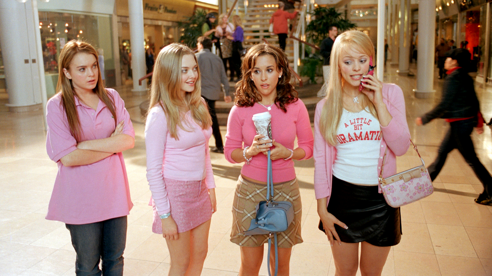
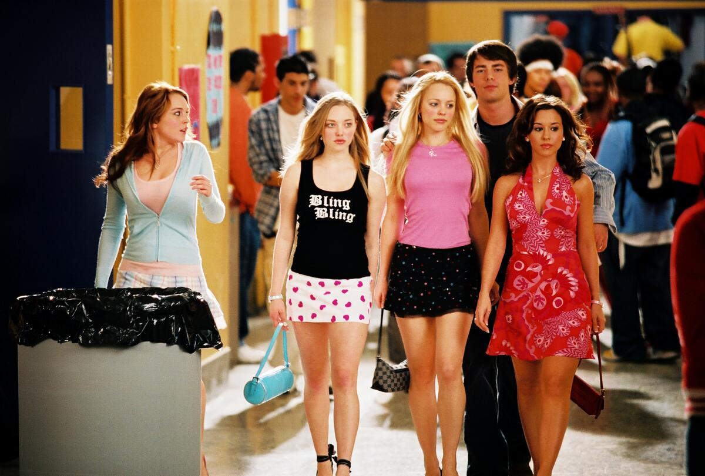

Mean Girls is a 2004 American teen comedy film directed by Mark Waters and written by Tina Fey.
It stars Lindsay Lohan as Cady Heron, Rachel McAdams as Regina George, Amanda Seyfried as Karen Smith, and Lacey Chabert as Gretchen Wieners as the four main girls.

Cady Heron, the exchange student who walked into school looking like a baby deer and accidentally became a villain. Goes from “Hi, I’m new :)” to “I control the weather on Halloween.” She’s basically a STEM kid who got drunk on popularity.
Regina George, the original influencer. Weaponized compliments, controlled the entire cafeteria like it was her kingdom, and ruined lives with a three-way call. Terrifying, gorgeous, strategic. If confidence were a person, it’d be Regina in a mini skirt.
Gretchen Wieners, a stressed-out girl with hair full of secrets. She just wants someone—anyone—to tell her she’s doing amazing. Her whole personality is “please like me,” but honestly, she’s the most emotionally relatable one.
Karen Smith, the human golden retriever. Beautiful, clueless, and accidentally hilarious. She has ESPN or something. She’s never trying to be mean—she’s just vibing, radiating pure dumb sunshine.

Fey joined in as Mrs. Norbury, a teacher in the high school and Amy Poehler played an iconic role as Regina’s mom.
Tina Fey read Rosalind Wiseman’s self-help book, Queen Bees and Wannabes and called Saturday Night Live producer Lorne Michaels to suggest it could be turned into a film. Michaels contacted Paramount Pictures, who purchased the rights to the book.
As the book is nonfiction, Fey wrote the plot from scratch, borrowing elements from her own high school experience. Fey named many characters after real-life friends.
Mean Girls with a run time of 97 minutes, has become a pop culture phenomenon. It is considered one of the most quotable films of all time.